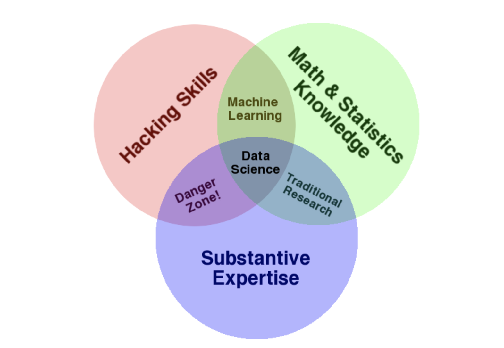
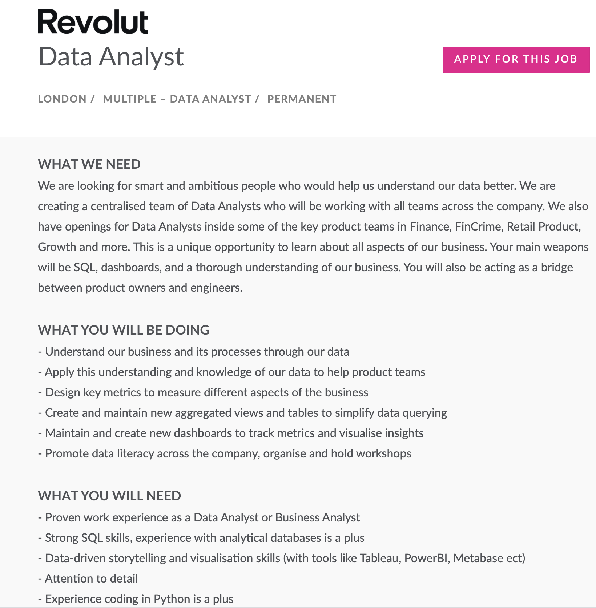
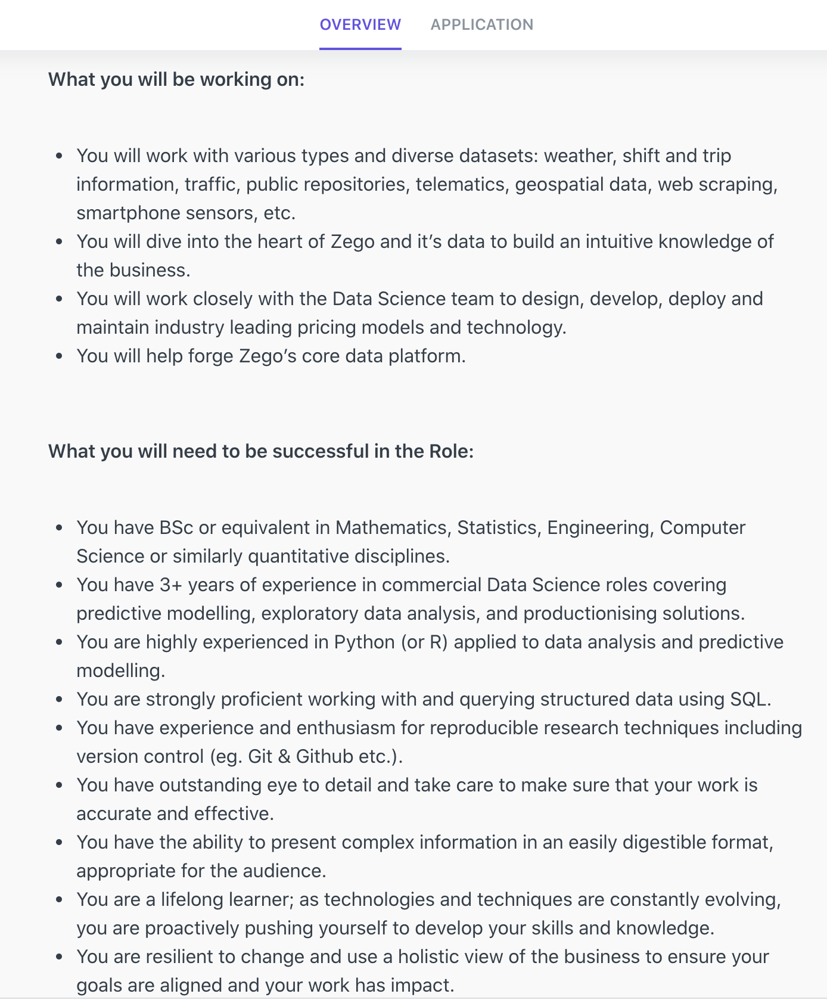
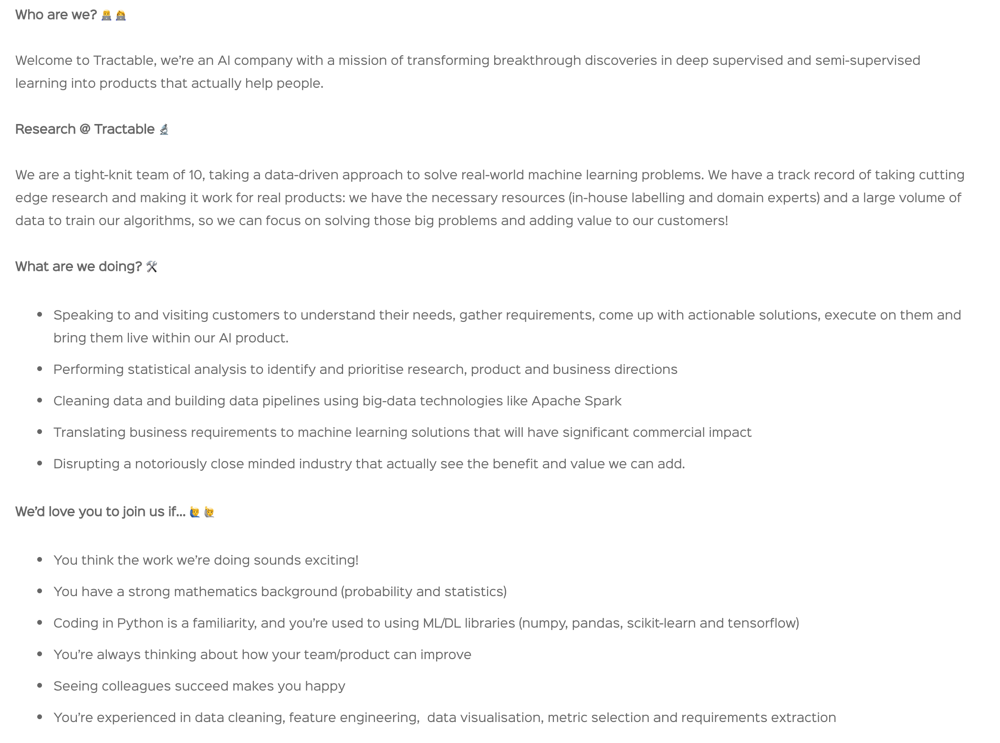

Table of Contents
- What is Data Science?
- What types of jobs exist in Data Science today?
- What are skills are required to be an effective Data Scientist?
- How do I get into Data Science?
- Who's Hiring?
Junaid Butt
Data Scientist
We live in an AI bubble, almost every company now speaks about being data driven or leveraging the power of Artificial Intelligence, Data Science, Machine Learning etc.
The term 'Data Science' was first coined by DJ Patil (LinkedIn) and Jeff Hammerbacher (Facebook).
"I was at LinkedIn building the data team and Jeff Hammerbacher was bustling at Facebook's data team... One of the things we realised was that we didn't know what to call ourselves...Do you call yourself an analyst? It feels too Wall Street. A research scientist or statistician? Feels too academic..." - DJ Patil
Not off to a promising start! But there is hope!
"The most important thing is how you use data to interact with the world, study it and try to come up with new things..." - DJ Patil
This definition is fine as a philosophical definition but if we review job descriptions, you get an idea of what the industry considers to be data science.
Drew Conway's Data Science Venn Diagram

There are multiple roles available in Data Science and it can be confusing to tell them apart.
For the purposes of this talk we're going to centre our discussion around 3 major archetypes.
Since the definition of Data Science is not very precise or exclusive, there will be fluidity and overlap between these roles.







In product led technology companies like Facebook, Google, Uber, Deliveroo, Monzo etc. There are cross functional teams of software engineers, product managers and Data Scientists who use Data Science to drive decision making.
It is less common to see Data Scientists/ Data Analysts and Data Engineers in their own dedicated functions, their efficacy is maximised when they're embedded within the product, when we do see this it tends to be in academic research or consultancy based businesses.
For most companies, the data revolution is underway and is in different stages - this is true for start ups as well. Increasingly seeing early stage start ups (fewer than 50 people) employ data people to look at their performance to see how they can make informed better decisions.
Which of the 3 Data Science roles that we've discussed today would be responsible for setting up and maintaining a Data Warehouse?
This would be a data architecture decision which would affect all aspects of the data workflow.
This would traditionally be a Data Engineer's job.

Statistical Literacy:
General Workflow:
Visualisation and Communication
Passion!
You don't need a Mathematics or Computer Science Degree to do this!
Courses
If you have a good foundation of programming and statistical skills then you can do the following
Projects - Like Software Engineering, it helps to have a portfolio of Data Science projects in which you've demonstrated key technical skills. The best place to show these projects is Github; decorate your Github with key projects that you can talk to employers and the community about. Try to be involved in as many side projects as possible.
Build web apps with statistics/ ML integrated - Flash/ Shiny. Many prominent Data Scientists have small scale web apps deployed via platforms like Heroku which performs a function and shows technical ability. These don't have to be ground breaking or original!
Be involved in community Data Science initiatives and activities. Kaggle, Tidy Tuesday (for R), check EventBrite/ Meetup for Data Science meetups and attend - the community is very helpful.
You work at a SAAS company and your product manager comes to you and says "Signups to the platform are down to the lowest point of the year - what's happening?". What steps do you take to look into this?
Uses of your product have been declining recently - you suspect it is because customers are displeased with the customer experience, your CEO remarks "It makes no sense, our NPS scores are very high". What is the problem with this statement? How would you investigate what's happening?
You work at a Newspaper and have built a new recommendation engine which suggests stories to users as they browse through your website. One of the journalists feels that the new algorithm does not promote their articles fairly with respect to others and has scheduled a meeting with you to speak about this - how do you prepare for this meeting?
If you don't like the look of any of the above - solve this \[ f(x) = \int_{-\infty}^{\infty} e^{-\frac{1}{2}x^2} dx \]